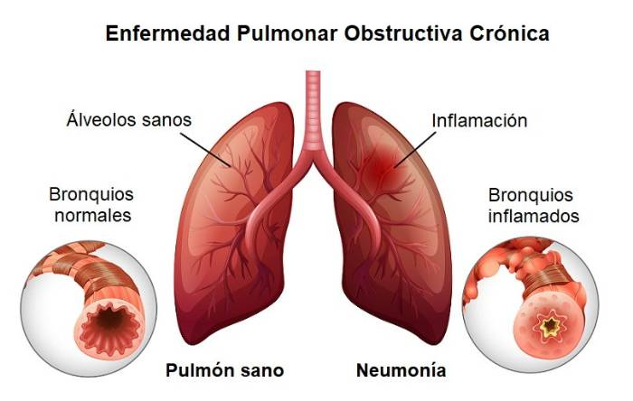
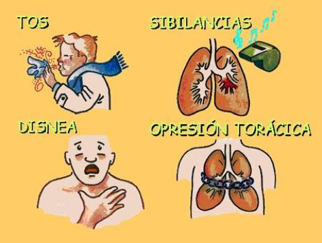
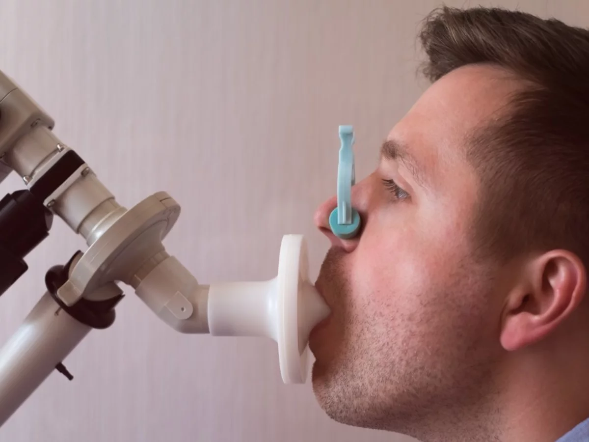

Enfermedad Pulmonar Obstructiva Crónica (EPOC)

La EPOC es una afección pulmonar crónica caracterizada por la obstrucción del flujo de aire en los pulmones, lo que dificulta la respiración. Esta obstrucción del flujo de aire es generalmente progresiva y suele ser irreversible. A largo plazo afecta las vías respiratorias y los pulmones, y generalmente se relaciona con el tabaquismo y la exposición a sustancias irritantes del aire.
Factores de riesgo
La probabilidad de desarrollar la EPOC está influenciada por diversos factores de riesgo, siendo el consumo de tabaco el principal entre ellos. Sorprendentemente, hasta un 75% de los pacientes diagnosticados con EPOC tienen antecedentes de tabaquismo en algún momento de sus vidas. Además del tabaco, existen otras causas contribuyentes que incluyen la exposición prolongada a contaminantes ambientales, como el humo de segunda mano, así como la exposición laboral a partículas e irritantes.

Signos y síntomas de la EPOC
Los signos y síntomas de la EPOC no suelen manifestarse de manera inmediata. A medida que progresa el daño pulmonar, estos síntomas tienden a volverse más notorios. Entre los más comunes, se incluyen:
- Tos Crónica Productiva: Los pacientes pueden experimentar una tos persistente que produce moco. Esta tos es un síntoma característico de la enfermedad.
- Silbidos y Sibilancias al Respirar: Al respirar, es posible que se escuchen silbidos o sibilancias, que son resultado de la estrechez de las vías respiratorias.
- Disnea: La disnea, o sensación de falta de aire, suele manifestarse, especialmente al realizar esfuerzos físicos.
Con la progresión de la enfermedad a etapas avanzadas, también pueden surgir:
- Infecciones Respiratorias Recurrentes: Los pacientes pueden ser más propensos a desarrollar infecciones respiratorias con frecuencia debido a la debilidad del sistema pulmonar.
- Descompensación Sistémica: En casos avanzados, la enfermedad puede afectar no solo los pulmones, sino también otros sistemas del cuerpo, lo que puede llevar a una descompensación sistémica.

Diagnóstico de la EPOC
Cuando se sospecha clínicamente de la Enfermedad Pulmonar Obstructiva Crónica (EPOC), es esencial llevar a cabo un riguroso proceso diagnóstico. El médico a cargo recopilará antecedentes personales y familiares, además de evaluar la presencia de factores de riesgo, lo cual complementará con hallazgos obtenidos durante la exploración física. Sin embargo, la prueba fundamental en este proceso es la espirometría, que proporciona una medición objetiva del grado de obstrucción bronquial.

Tratamiento de la EPOC
Para el tratamiento de la EPOC, se dispone de una variedad de opciones destinadas a controlar los síntomas y mejorar la calidad de vida de los pacientes. Entre estas alternativas, se encuentran:
- Oxigenoterapia: En etapas avanzadas de la EPOC, la oxigenoterapia se convierte en una herramienta vital para corregir la hipoxemia (niveles bajos de oxígeno en sangre), lo que mejora significativamente la función pulmonar y la calidad de vida.
- Programas de Rehabilitación Pulmonar: Estos programas, que incluyen ejercicios supervisados, educación y apoyo psicosocial, juegan un papel fundamental en la mejora de la capacidad funcional de los pacientes, permitiéndoles una vida más activa y saludable.
- Vacunas: Las vacunas contra la influenza y el neumococo desempeñan un papel crucial en la prevención de infecciones que pueden agravar la EPOC. Mantenerse al día con estas vacunas es esencial para la protección de la salud.
Variables
Además de los aspectos clínicos mencionados, al monitorear y tratar pacientes con EPOC, es esencial tener en cuenta las siguientes variables:
- Saturación de Oxígeno en Sangre (SpO2): La SpO2 indica el porcentaje de hemoglobina saturada con oxígeno en la sangre arterial y es un indicador crucial de la capacidad del cuerpo para transportar oxígeno a los tejidos.
- Frecuencia Respiratoria (FR): La FR es el número de respiraciones completas que una persona realiza en un minuto. Puede ser un indicador útil de la eficacia de la ventilación pulmonar y del esfuerzo respiratorio del paciente.
Artículos de soporte